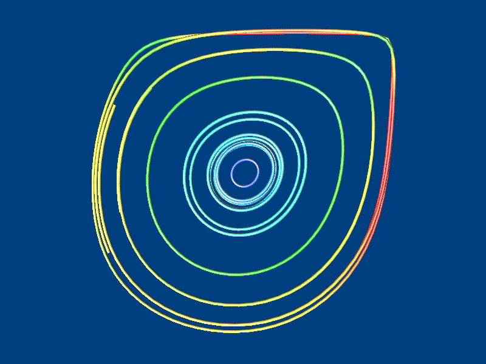
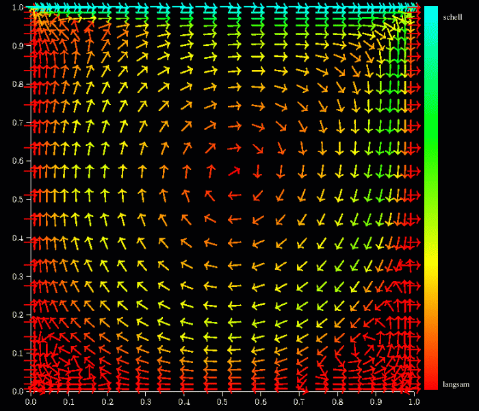
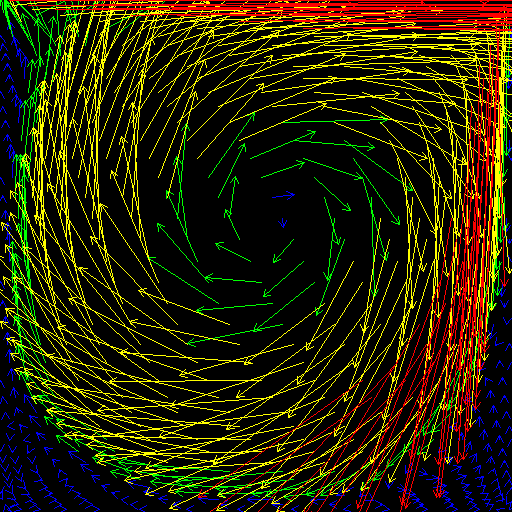
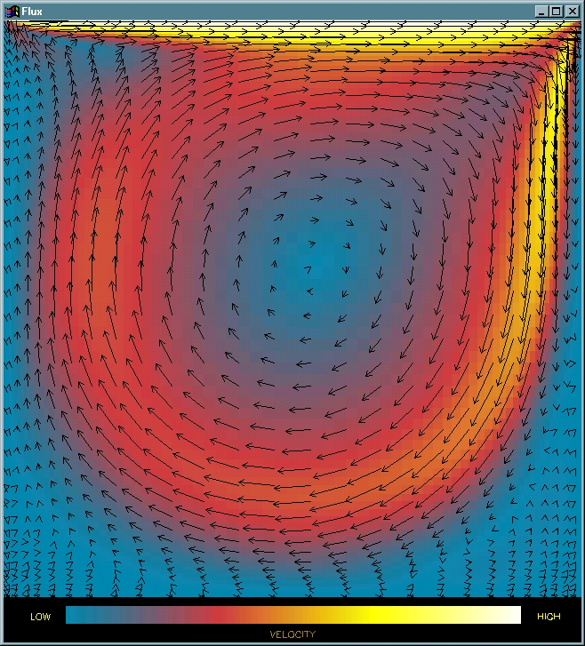

Worried about a Google Saved Folder?
Worried about a GitHub Saved Folder?
Assignment 2 FAQ P4-Grp4
I am Sai Wai. You'll work for Problem 4: Exploring and Visualizing Water Flow assignment, be sure to support with contribution to this group Grp 4. As proof of assignment briefing after a week on Week 5, please enjoy this revise schedule.
Pay Attention!
About the Creative Team
Ordered lists with links include:
About the Team Schedule
| Team Responsibility |
1.0 Problem Domain |
2.0 Importing Data |
3.0 Exploring the Water Flow |
4.0 Exploring the Magnitude of Water Flow |
5.0 Visualization Designs |
| Yip Jun Hui |
Physical Submission : 28/11 & 6/12 |
NA
|
| Sai Wai |
NA |
Physical Submission : 6/12 & 13/12 |
NA |
| Cher-Yin |
NA |
Physical Submission : 29/11 & 13/12 |
| Wong |
NA |
Physical Submission : 29/11 & 13/12 |
| Scheduled Meeting |
HTML5, ParaView (.stat) |
HTML5, CSS, ScreenshotPNG, Animation | Final Compilation |
| Zoom Meeting, at 9:00PM on 23/11 & 29/11 |
Zoom Meeting, at 9:00PM on 13/12 & 14/12 |
Zoom Meeting, at 11:00 am on 18/12 |
And you 'll try to complete Monday tasks.
Previous Details
I have had proposed headings of progress report. Here are some highlights:
- 1.0 Problem Domain - Where are the quickest / slowest movements without losing sight for the whole flow?
- 1.0 Problem Domain - What advantages/disadvantages did you find when using ParaView to visualise this dataset?
- 2.0 Importing Data - Import this data into one of the dataset formats supported by ParaView
- 3.0 Exploring the Water Flow - A series of images showing the water flow's behaviour
- 4.0 Exploring the Magnitude of Water Flow - A series of images showing contour outputs of the vector field.
- 4.0 Exploring the Magnitude of Water Flow - A series of images showing the combined vis idiom of arrow plot and says colour mapping the speed's quantity
- 5.0 Visualization Designs - Discuss and describe your solution idiom

streamline

arrow-1

arrow-2

arrow+speed
Due Date
The assignment is due at 10:00am on Sunday, December 27.